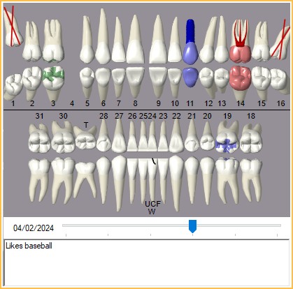

Chart Module
The Chart Module is where the clinical information is entered and organized for a patient.

 See our Chart Module playlist.
See our Chart Module playlist.
Other options:
- To view only clinical information, see Show Features.
- Define colors in Definitions: Chart Graphic Colors.
- Customize the layout in Chart Layout.
Chart Toolbar
- Print: Launch a print preview of Progress Notes. When the Hospitals feature is enabled in Show Features, printout includes date and signature lines.
- New Rx: Create a single Rx / Prescription.
- Rx Manage: Create and print multiple prescriptions at once. See Rx Manage.
- eRx: Create an electronic prescription. If using DoseSpot, opens the DoseSpot eRx / Prescription interface. If the logged-on user is a Proxy user, a prompt displays to select a provider before launching the DoseSpot interface. If using Ensora eRx (formerly NewCrop eRx), opens the Ensora eRX / Prescription interface. If eRx is not enabled for the practice, an error displays. Click the dropdown to view additional options.
- Refresh: Manually copy new electronic prescriptions to the Progress Notes and Medication List.
- Pending Prescriptions: View prescriptions that have been added for the patient but not yet sent to the pharmacy.
- If using DoseSpot, the number of pending prescriptions displays. Click to view pending prescriptions in the DoseSpot interface.
- If using Ensora eRx, the number of pending prescriptions does not display. Click to view pending prescriptions in the Ensora interface.
- Refill Requests: View requests for a prescription refill sent by the patient's pharmacy.
- If using DoseSpot, the number of refill requests displays. Click to view refill requests in the DoseSpot interface.
- If using Ensora eRx, the number of refill requests does not display. Click to view refill requests in the Ensora interface.
- Transaction Errors: View errors associated with a prescription that has failed to reach the pharmacy.
- If using DoseSpot, the number of transaction errors displays. Click to view transaction errors in the DoseSpot interface.
- If using Ensora eRx, the number of transaction errors does not display. Click to view transaction errors in the Ensora interface.
- LabCase: Create new Lab Cases.
- Perio Chart: Enter periodontal information in the Perio Chart.
- Ortho Chart :Only available when Show Ortho button and tab in Chart Module is enabled in Preferences. Open the Ortho Chart, an alternate method of keeping track of visits. Ortho Chart entries can also be viewed from the Ortho tab. Click the dropdown to open a specific tab when multiple tabs are set up.
- Consent: See Consent Form.
- Tooth Chart: Click to open dropdown options. Choose Show Big to open the Big Graphical Tooth Chart. Choose Save to Images to save a copy of the tooth chart to the Imaging Module.
- Exam Sheet: Create an Exam Sheet.
- CCD: Open the Continuity of Care Document (CCD) window.
- EHR: Launch the EHR Dashboard (EHR users only).
- Layout: Allows switching between different versions of the Chart Layout. Click the drop down to select a custom layout. Click the button to create a new layout (stored as a custom Sheet). Layout selection affects the logged-on user only. To change the default chart layout see Sheet Def Defaults.
- Bridge buttons: Additional bridge buttons display when enabled in Program Links.
Graphical Chart
The Graphical Tooth Chart shows all restorative treatment that has been performed or is planned for the patient. Drag the slider bar under the tooth chart to view procedure changes to the tooth chart over time.
- Customize procedure status colors in Definitions: Chart Graphic Colors.
- Customize the type of graphic on the Procedure Code (Paint Type).
- Select freehand drawing options on the Draw tab.
- Control which procedures are shown on the graphical chart on the Show tab.
- Odontogram Notes: The white text box below the tooth chart can be used for any notes that are not pertinent to the patient's treatment. The history of these notes is not saved or tracked. This text box supports Right-Click Options.
Tabs
To show/hide tab details, click the currently selected tab.
- Enter Treatment: Enter and chart procedures. See Enter Treatment.
- Missing/Primary: Record missing teeth, and mark primary/permanent teeth on the graphical tooth chart. See Missing/Primary Teeth.
- Movements: Indicate tooth movement on the graphical tooth chart. See Tooth Movements.
- Planned Appts: If treatment is needed, set up the patient's next appointment. See Planned Appointments.
- Show: Set up different views for the Progress Notes grid. See Show Chart Views.
- Draw: Freehand draw on the graphical tooth chart. See Draw on Tooth Chart.
- Ortho: Only available when the preference, Show Ortho button and tab in Chart Module, is enabled. Displays the Chart in Ortho mode to view chart hardware and Ortho Chart notes.
Patient Info

Patient information is in the lower left. The fields that appear are defined in Display Fields. Double-click a white row to open Edit Patient Information.
A summary of medical information appears in pink/light red by default. To change the color of the medical area, see Definitions: Misc Colors. Double-click on a medical row to open the Medical Chart.
Progress Notes

The grid title and items that show in the Progress Notes area are determined by the options selected for the active Chart View under the Show tab.
- The color for specific types of entries can be customized in Definitions: Prog Note Colors.
- If the preference, Use provider color in chart, is enabled, rows for Completed and Existing Complete procedures are filled with the Provider color of the treating provider.
- Completed procedures may use the Existing Other color when the logged-on user has Chart graphics color distinguishes current provider enabled. See User Settings for details.
To edit an item in the Progress Notes, double-click on it. Right-click to view additional options.
Items in the Progress Notes are sorted in the following order:
- Date (oldest on top)
- Type (task, procedure, sheet, etc.)
- Date (oldest on top)
- Status (treatment planned procedures show before completed procedures)
- Priority (highest to lowest based on the order on priority options)
- Tooth number (no tooth number first, then lowest to highest)
- Procedure Code (lowest to highest)
-
Procedures are sorted in the following order:
See Show Chart Views for additional information on filtering the Progress Notes section.
Right-Click Options: Right-click options change depending on items selected. Unavailable options are greyed out. Some right-click options may be hidden depending on a user's Permissions
- Delete: Delete the selected item. Completed procedures and group notes attached to at least one completed procedure cannot be deleted from here.
- The warning At least one procedure must be attached to the appointment appears when a selected procedure is the last remaining on an appointment and the preference, Appointments require procedures is enabled. Click OK to close the warning. No procedures are deleted. De-select one or more procedures attached to an appointment to delete other procedures.
- Set Complete: Set appointments, procedures, and tasks complete. Procedure dates are updated based on the date set in the Enter Treatment tab, unless the procedures are attached to an appointment, in which case the appointment date is used. Note: Procedures can only be set complete when the preference, Allow setting procedures complete, is enabled.
- Set Existing Current: Set a procedure to a status of Existing Current. Procedure dates are updated based on the date set in the Enter Treatment tab.
- Set Existing Other: Set a procedure to a status of Existing Other. Procedure dates are updated based on the date set in the Enter Treatment tab.
- Edit All: Change the date, provider, or clinic (if enabled) for selected procedures.

- Group Note: Attach a single clinical Procedure Group Note to multiple procedures that have been set complete and have the same procedure date.
- Print Progress Notes: Print the progress notes as they currently show on screen. Each page of the printed notes include the patient name, ChartNumber (if any), and page number. When Hospitals is enabled in Show Features, printout includes date and signature lines.
- Print Day for Hospital: In Show Features, Hospital must be checked. Print only completed procedures, a photo of the patient (if available), and a signature line at the bottom for the staff to sign.
- Group for Multiple Visits: Group together related procedures that are done during multiple visits (e.g., crowns). When a procedure is set complete the procedure status displays as Complete (In Process) until all other procedures in the group are set complete as well.
- View Multivisit Group(s): View grouped procedures, and ungroup as needed. See Procedure over Multiple Appointments.
- Print Routing Slip: Print a single routing slip for the selected appointment.
Use the Show Tab, Search box to search through progress notes using a word or phrase.
Paging (<<, <, >, >>): As progress notes become longer, use the arrows or numbers to navigate through progress note pages. Paging only appears if the patient has more than 500 items in their progress notes (commlogs, procedures, tasks, emails, etc). When the progress notes are sorted by a column, paging is disabled for the results until the Chart Module is refreshed."
Image Tabs

The tabs below Patient Info reflect Image categories that have been marked as Show in Chart module in Definitions: Image Categories. This is useful to view items like radiographs and photos directly in the Chart Module.
- Image files display a thumbnail preview.
- The height of the images section can be made taller or shorter by dragging the splitter.
- To quickly minimize/maximize the area, click on the current tab.
- Click the All tab to show all images for all tabs.
- Double-click an image to open the image full size in a new window. The new window can be dragged to another monitor if multiple monitors are used, and it can remain open while returning to the Chart. When an image is displayed, the following right-click options are available:
- Copy: Copy the selected image.
- Flip Horizontally: Flip the image orientation horizontally. Orientation saves when closed.
- Rotate Left: Rotate the image to the left. Rotation saves when closed.
- Rotate Right: Rotate the image to the right. Rotation saves when closed.
- Rotate 180: Rotate the image 180 degrees. Rotation saves when closed.
- Info: Open the Item Info window.
- Double-clicking a non-image file (e.g., xls, txt) opens that file in the default program for that file type.